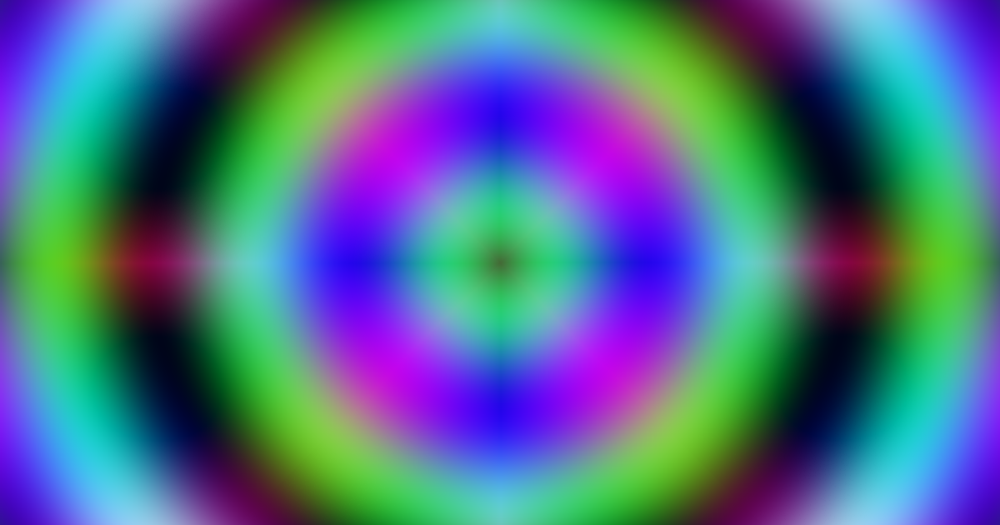
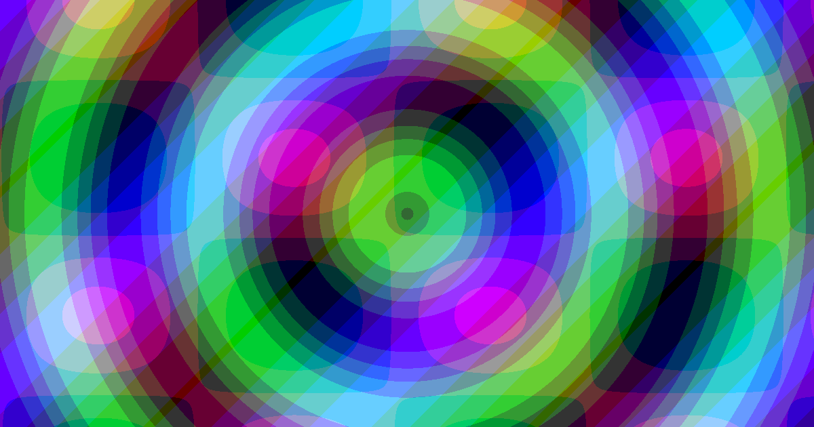

Explore visual effects
Discover filters, preview them on your image, and adjust controls to find a look that feels right.
CHROMAMELD RGBA / CREATIVE TOOL 01
ChromaMeld RGBA is a free, browser-based procedural image filter editor. Explore expressive effects, adjust their controls, or build your own using mathematical RGBA formulas.
FREE TO USE / OPEN SOURCE / RUNS IN YOUR BROWSER

01 / THE WORKFLOW
Start with an effect. Make it yours. Keep the results and the formulas behind them.
Discover filters, preview them on your image, and adjust controls to find a look that feels right.
Write expressions for red, green, blue, and alpha. Bring in controls, noise, masks, sampling, and more.
Export PNG images and portable JSON filters, or import supported historic Filter Factory .afs files.
02 / A CLOSER LOOK
Move between exploring finished filters and editing the expressions that make them work. Every channel is a place to experiment.
Explore the source
03 / UNDER THE HOOD
Go beyond fixed presets with editable filter mathematics. Combine image sampling, gradients, procedural noise, fractals and masks to explore new outcomes.
Compatible programs can use WebGPU on supported devices; the app automatically falls back to a CPU Worker when needed. Inspired by Filter Factory and Filter Foundry, it also imports supported historic .afs files.
Read the documentation ↗04 / GOOD TO KNOW
Yes. The application is free and its source is open under GPL-2.0-or-later.
No. A CPU rendering path is available, with WebGPU acceleration for compatible filters on supported devices.
Yes. Author RGBA formulas and add configurable controls.
Supported historic .afs files can be imported. Legacy operations and semantics may differ and may use the CPU.
Custom filters are stored locally in your browser. Use backup or export when moving between browsers or origins.